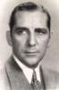

Country:United States, 63 minutes
Spoken languages:English
Genres:Mystery
Director(s):Spencer Gordon Bennet
Writer(s):
Video Codec:Unknown
Number: 3056


Certification:
Storyline:
Guests at a luxury hotel are horrified when they witness a man literally "disappear into thin air." The vanished man's relatives hire a detective, who goes to the hotel to investigate the disappearance.
Cast: 


Medium: Original DVD,
Comments: Part of: Horror Classics - 100 Movie Pack
Loaned: No
Aspect ratio: Unknown